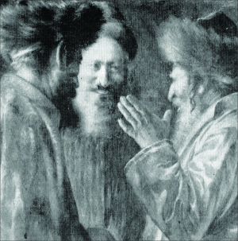

The Baal Shem Tov Tells a Story
A story about the Baal Shem Tov, presented for Shavuos, the day of his histalkus.
PART I

Someone finally asked him and the Baal Shem Tov replied that a holy soul, hewn from the purest of chambers, had come down to this world. “There were many obstacles – the mother had a very hard time in labor and she and her baby were in danger. The ‘baal davar’ (Talmudic term for a litigant, used as a euphemism for the Satan) himself fought them, and my prayers accomplished that the baby was born healthy. That is why I am delighted.”
Eight days later, the bris of Menachem Mendel was celebrated in the town of Vitebsk.
PART II
(Nine months earlier): Liba was a refined, modest woman. She spent her time working in her grocery store while her husband, R’ Moshe, was one of the disciples of the Baal Shem Tov. As he sat immersed in his Torah and avoda, she supported the household.
That day she had many customers. She couldn’t explain why business was suddenly going so well. Customers came mainly in the late afternoon until almost sunset. Liba didn’t know that this was the work of the Satan.
When all the customers finally left, she cleaned up the store so she could return home while it was still daylight. Then, surprisingly, in came the local priest. He had a long list of items he wanted to buy, which was most unusual. Liba looked at the long shopping list and her heart beat faster. It wasn’t every day that a customer came in with such a long list. She had nearly gone to fill the order when she noticed the sun sinking in the west. She knew she had to hurry home and for a few moments she stood there hesitantly. Should she fill the priest’s order and earn an amount of money it usually took her a week to earn? Or should she close up shop and go home?
At that moment, the Baal Shem Tov was standing and davening in distant Mezhibuzh, that Liba not fail this test. The woman told the priest she was closing the store and could help him the following day. The priest looked at her in astonishment. He knew she needed the money and he tried pressuring her, but she was firm about her decision.
She closed the store and went home, happy that she had withstood the test.
That night, a lofty soul descended to the world, the soul of R’ Menachem Mendel, later known as R’ Menachem Mendel of Vitebsk. He was the leader of the Chassidim in Russia and Lithuania. Afterward, he led the Chassidim in Eretz Yisroel.
PART III
Little Mendele went to the Baal Shem Tov two times. The first time was when he was nine. His father took him to the Baal Shem Tov for a bracha.
His unusual abilities were apparent already at this age. He quickly grasped his studies. Soon, there was no melamed available to teach him. Even his brilliant melamdim like the famous gaon R’ Yosef of Pinsk and the gaon R’ Yisachar Dov of Lubavitch conceded that his abilities were unusual.
So his father sent him to the veteran melamed known for his brilliance. This melamed was lame and endured much suffering, but his teaching abilities were extraordinary. So Mendele went to R’ Dovber’s little hut and learned Torah with him.
This melamed was none other than Rav Dovber, Maggid of Mezritch, who was the successor of the Baal Shem Tov in leading the Chassidic movement. R’ Dovber was already mekushar, heart and soul, to the Baal Shem Tov at this time, and he would occasionally travel to Mezhibuzh to see his Rebbe.
R’ Dovber loved his young talmid. He soon saw how talented he was and he lovingly shared his Torah treasures with him.
Then, one Shabbos, the boy felt that something had come between him and his teacher. It was Shabbos afternoon after the meal when the door to the local beis midrash suddenly opened and his melamed came in. Mendele was immersed in his learning, pacing the beis midrash to and fro. His eyes were focused on the volume in his hand and his hat was tilted to one side, with an air of self-satisfaction.
The melamed stood in the doorway and said, “How many pages of Gemara did you learn today?”
The boy looked up and saw his teacher with an expression on his face that bespoke his displeasure.
“Six pages,” he answered.
The Maggid nodded and said in a low voice, as though talking to himself, “If, from learning six pages of Gemara, your hat is tilted to the side, how many pages are needed for the hat to come off entirely?”
Without waiting for a response, the Maggid left, closing the door behind him, leaving behind his bewildered talmid. Mendele had never heard his teacher speak this way before. Furthermore, he knew just what his melamed meant. He burst into tears, knowing how arrogance had taken root in his heart.
He went to his teacher and knocked on the door to ask for his advice. “Tell me what to do. I know I took pride in what I accomplished and now I want to do t’shuva.”
The Maggid’s piercing eyes went straight through to the boy’s neshama and he saw that the child truly regretted his behavior.
“Don’t worry, Mendel. After Shabbos you and I will go to the Baal Shem Tov and he will direct you.”
Mendel was greatly relieved and a hopeful look replaced the despondency in his eyes.
***
It took them three days to get from where R’ Dovber lived to Mezhibuzh. They left on a Tuesday and arrived on Friday afternoon.
After immersing in the river, the Maggid hurried to the house of his master. He did not take note that his talmid remained at the inn, busy arranging his hair. All of Mendel’s acquaintances and teachers knew that he was very particular about how he dressed and how he looked. His clothing was always immaculate and dignified, his hat just-so, and his hair arranged carefully. This was despite the fact that inwardly, he was utterly battul and humble. The reason for his concern over his appearance will be explained shortly.
Shabbos was quickly approaching. The Baal Shem Tov was already standing at his place in the beis midrash, ready to begin Mincha and Kabbalas Shabbos. It was his practice to welcome the Shabbos Queen while it was still day. The talmidim waited for a signal to begin but he kept waiting.
The talmidim wondered at this but remained silent. The hour grew later and then finally, the door opened and in walked an unfamiliar boy. The Baal Shem Tov turned to him and when he saw the pure-faced child, his eyes lit up and he indicated to the chazan that he should begin davening. The talmidim found this most astonishing.
That Shabbos was an uplifting one for the Baal Shem Tov and his disciples. The boy observed the goings-on.
Shortly after Shabbos was over, R’ Dovber and his student were invited to the room of the Baal Shem Tov. They were surprised by the unexpected invitation. They saw the Baal Shem Tov sitting there smoking his pipe, and his talmid R’ Yaakov Yosef, later known as the Toldos Yaakov Yosef of Polnoye.
They stood there in silence as their Rebbe sat, deep in thought. Then the Baal Shem Tov’s voice broke the silence as he said, “There were oxen with a plow behind them.” The three of them stood and listened to the story. Even the young boy understood that there was deep meaning to this story.
The Baal Shem Tov continued his story as he puffed on his pipe now and then (this too was an avoda, as Chassidim said his smoking his pipe was akin to the incense brought in the Beis HaMikdash).
When he finished the story, the three left the room and looked in wonderment at one another. They understood that the tzaddik had alluded to everything that happened and would happen to young Mendele from the moment he was born, until the day he would die.
“It seems to me that the story is self-explanatory from beginning to end,” said the Maggid of Mezritch.
R’ Yaakov Yosef said, “To me it is clear until half-way through the story.”
Mendele said, “I only understood the story up until today.”
PART IV
Before the melamed and his pupil returned home, the Maggid went back to the Baal Shem Tov’s room to say goodbye. He also wanted guidance for how to proceed with his precocious talmid.
The Baal Shem Tov said, “I see a boy who is truly lowly in his own eyes,” alluding to the incident which had precipitated the trip to Mezhibuzh. He indicated that there was nothing to worry about.
Indeed, R’ Menachem Mendel of Vitebsk was known for his sterling character but his humility was greatest of all. He never considered himself worthy. He would sign his letters with the phrase, ha’shafal b’emes (he who is truly lowly).
This trait was apparent when he was in the beis midrash of the Maggid. His peers would say about him that his soul was from the aspect of malchus, which includes both regality and lowliness.
Interestingly, although he was truly lowly in his own eyes, he was particular about his appearance. His manners and deportment were outstanding in their exactitude and resplendence. How did he combine both of these characteristics?
R’ Yaakov Yosef of Polnoye would compare this to a person who has an exceedingly precious stone. He was extremely worried that it not be stolen from him and finally came up with a plan. He hid the stone in the privy where it lay in the mud and filth, a place that nobody would think of searching.
“The same is true for Mendel. He is utterly humble and he is afraid that his humility, no matter how he attempts to cloak it, would be a source of sustenance for klipos. This is why he hides it in a filthy place, within the attribute of arrogance!”
***
Some years went by and R’ Menachem Mendel of Vitebsk became the leader of thousands in Russia and Lithuania. One day he fell sick and his condition deteriorated from day to day until he lay unconscious.
His followers sobbed, knowing that shortly he would be taken from them. Suddenly, the tzaddik woke up and looked at the people surrounding his bed. He smiled weakly and waved his hand dismissively as though to say, what are you worrying about?
Then he said, “There is nothing to fear. From the story that I heard from the Baal Shem Tov when I was a child, I know that I have much time remaining to live and I still need to be in Eretz Yisroel.”
***
More years went by and in Adar of 5537/1777, R’ Menachem Mendel left for Eretz Yisroel with hundreds of followers and their families. He passed through Polnoye where he stayed in a local inn. He went to visit R’ Yaakov Yosef who lived there. R’ Yaakov Yosef had been the one to put the Baal Shem Tov’s teachings into writing.
R’ Mendel left the inn to see the tzaddik, his pipe in his hand, though not before removing his gartel. His clothes, as always, were splendiferous and his shoelaces were made of silver.
The Maggid of Polnoye’s Chassidim were apprehensive about the manner in which he made his way to the house of their Rebbe. They knew that their Rebbe was very particular about things like that and were afraid lest he be annoyed with R’ Mendel. Two of the distinguished Chassidim dared to approach R’ Mendel and say, “We know that the Maggid of Polnoye is likely to inflict punishment on those who come to see him in such a manner. Perhaps it would be better if …” However, they fell silent in the face of R’ Mendel’s quickened strides.
When R’ Menachem Mendel reached the Maggid of Polonoye’s house, the latter came out to greet him and ushered him in with great respect. He prepared a place for R’ Mendel to sit, despite being much older than him.
They sat facing one another, R’ Mendel smoking his pipe and R’ Yaakov Yosef looking at him with undisguised love. An understanding look passed between them. They needed very few words to understand one another.
“What part of the story are you up to now?” asked R’ Yaakov Yosef.
R’ Mendel understood what this question meant. He was referring to the story that the Baal Shem Tov had told them that Motzaei Shabbos.
“Ah,” sighed R’ Mendel. “I’ve already gone through more than half the story.”
R’ Yaakov Yosef looked at him and said, “Did you know that in the story it was alluded that you had to come to me?”
R’ Mendel nodded. “I knew. That is why I stopped here on my way to Eretz Yisroel.”
Said R’ Yaakov Yosef, “In the story, it was hinted that a young man would go along with you whose name goes from one end of the world to the other. Where is he?”
A pleased look could be seen on R’ Mendel’s face. He turned towards the entourage of Chassidim who had accompanied him and pointed to a young man. “This is the young man who is accompanying me. His name is Shneur Zalman …”
Menachem Ziegelboim. "The Baal Shem Tov Tells a Story." Beis Moshiach, no. 879 (May 9, 2013).